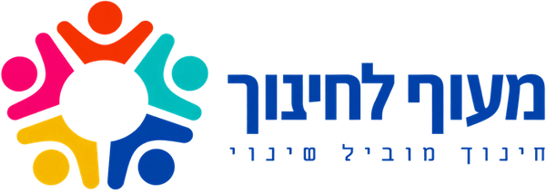
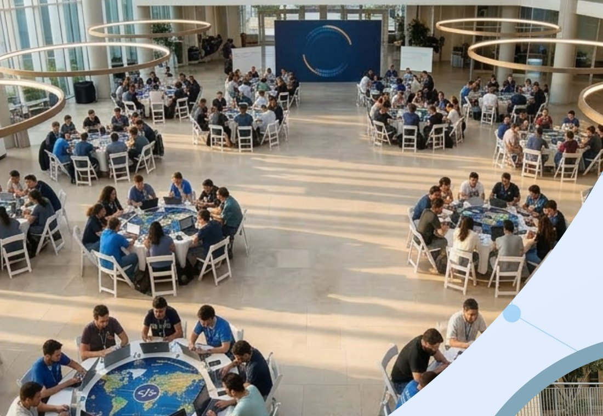
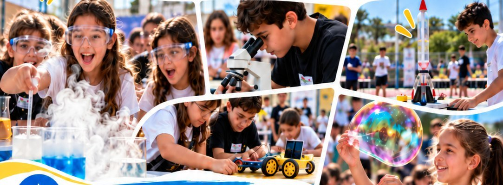
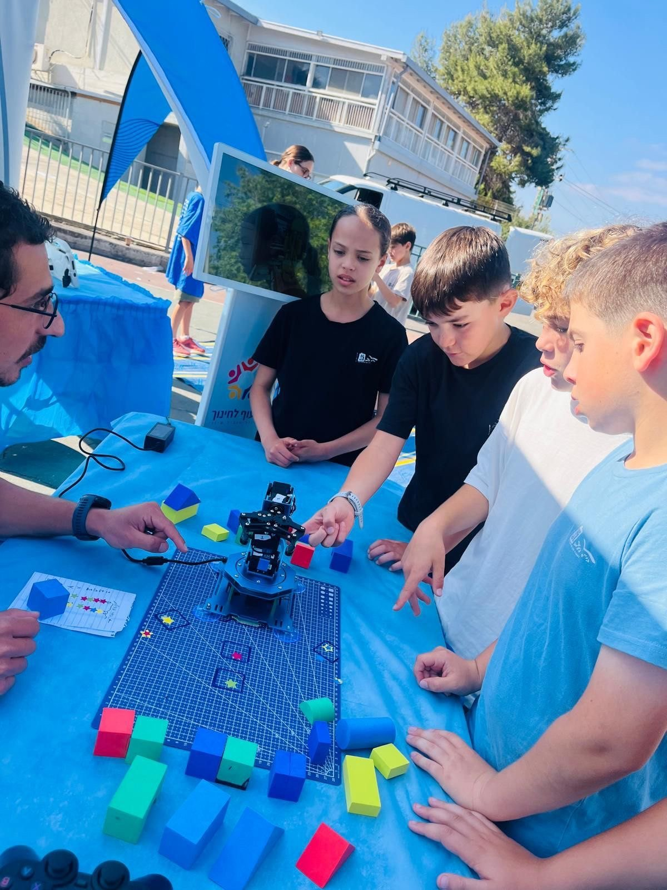
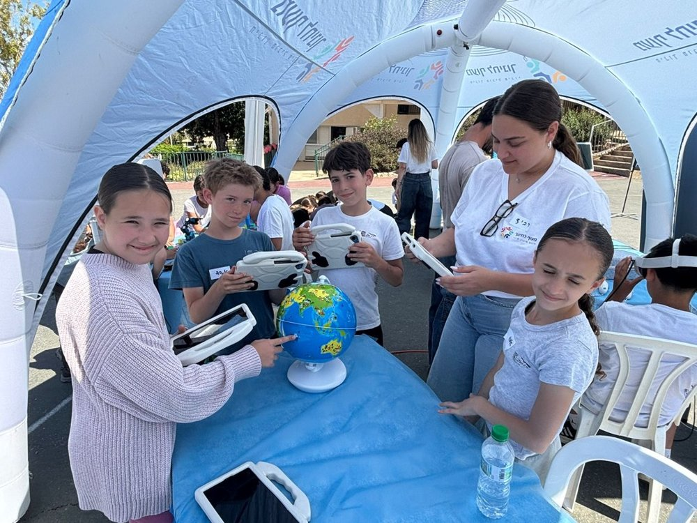

PROGRAM PROPOSAL FOR PARTNER SCHOOLS
Israel: where challenges become innovation

Classes from Israel, Singapore, Europe and the USA
Two tracks: Tech entrepreneurship and Social (SEL) entrepreneurship
GLOBAL YOUTH ENTREPRENEURSHIP PROGRAM
THE IDEA
Four classes work on the same entrepreneurship program at the same time. Students work in teams on a real venture project, and we propose teams mixed across countries. Methodology, mentors and coordination all run from Israel, so every class gets the same quality of program.
The pivot. Hof HaCarmel excellence class
Partner class
Partner class
Partner class
WHY ISRAEL
Israel is our learning lab for entrepreneurship. Not a list of Israeli inventions and not a political story, but a way to see how a real need becomes a solution. For every story we ask: what was the challenge, what need did it create, and how did an idea become technology?
Water scarcity
Water and desalination technology
Harsh farming conditions
Agriculture and irrigation innovation
Medical needs
Advanced medical devices
Information security
A global cyber industry
Limited resources in space
Satellites and space technology
Defense needs
Advanced protection systems
GLOBAL YOUTH ENTREPRENEURSHIP PROGRAM
WHO WE ARE
Maof LeChinuch is an Israeli education nonprofit that develops programs where students learn by building: entrepreneurship, technology and social-emotional skills. This international program is built on what already works in our schools.

Maof's programs are listed in the Ministry of Education's Gefen catalog, so schools can adopt them as part of their official offering.
Ten 90-minute sessions and a peak day, where students build tech solutions to boycott and shaming. Run in Hof HaCarmel schools and the Kfar Galim Youth Village.
Managed by Maof's pedagogical lead across 23 schools in the Haifa District.
A student entrepreneurship project led by Yarit Coifman won first national prize at Yotzrim Shinui (2022).
GLOBAL YOUTH ENTREPRENEURSHIP PROGRAM
THE PROGRAM

TRACK A
Build a technology venture with industry mentors
• A mentor from Israeli industry joins the weekly session (mentors to be confirmed)
• Mixed teams choose a challenge, validate it and build a prototype
• A panel judges feasibility across the classes
Winning class: NIS 100,000 grant (subject to feasibility)

TRACK B
Technology for Humanity: a tech solution to a human challenge
• Built on Maof's Gefen-approved Entrepreneurship and Change Hackathon, grades 5-9
• Teams tackle boycotts, shaming or online safety with a meaningful technology component, such as an app
• Each class holds a mini-hackathon, then the best ventures reach a final showcase
Outcome: a social-tech prototype
GLOBAL YOUTH ENTREPRENEURSHIP PROGRAM
HOW IT WORKS
Students go from a real challenge to a tested prototype, working in teams. The structure follows Maof's 15-session program, fitted to each school's calendar.
Know ourselves
Strengths, confidence and teamwork across countries.
See the other
Empathy, influence and different points of view.
Choose a challenge
Teams research it and define the real need.
Build a prototype
Ideas, a chosen solution and a prototype, with mentor feedback.
Class mini-hackathon
Teams present, students score the ventures, the best move on.
Final showcase
The best ventures pitch to the school, parents and guests.
Track A ends with: a feasibility case and a prototype, judged by a panel
Track B ends with: a social-tech prototype, shown at the final showcase
THE NEXT STEP
Our vision: a delegation of international students who completed the program visits Israel for a few days. They meet researchers and young founders, visit the Technion and innovation centers, and end with a joint hackathon in mixed teams with Israeli students.
GLOBAL YOUTH ENTREPRENEURSHIP PROGRAM
SAFE, SIMPLE, READY TO START
A teacher moderates every live meeting.
Never real names or incidents.
Parental consent; PDPA, GDPR, FERPA/COPPA.
Civilian topics, simple IP agreement.
• One excellence class, committed to the full 15 sessions
• A teacher liaison who joins the sessions
• A weekly slot in school hours
• School and parent approvals
• Mentors from Israeli industry (Tech track)
• Teamwork with students from other countries
• A chance at the NIS 100,000 grant (Tech track)
• A real social-tech solution (Social track)
NEXT STEPS
1
Choose a track
2
Name the class and teacher
3
Agree the weekly slot
4
Sign a short pilot agreement
Eyal Coifman
CEO. Industrial and management engineer, formerly at the Technion R&D Foundation.
Yarit Coifman
Educational and Pedagogical Lead. Programs approved in the Gefen catalog.
Contact: Eyal Coifman, CEO, Maof LeChinuch
+972 54-236-3473 · maofassociation@gmail.com · maof-edu.org